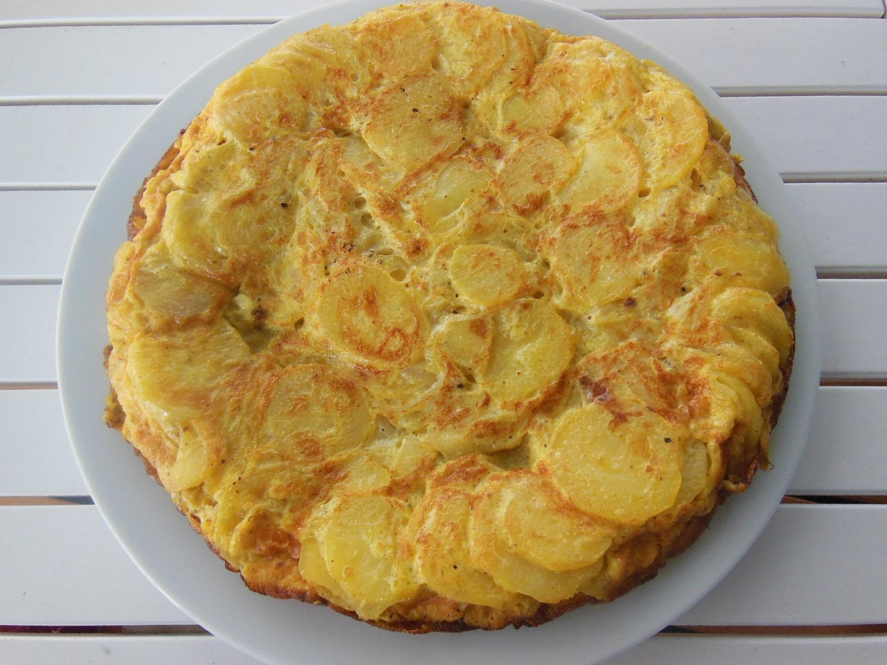

Spanish Omelette

A tasty Spanish Omelette
The classic Spanish potato omelette is a beloved, comforting cornerstone of Iberian cuisine made from thinly sliced potatoes and onions slowly confited in rich olive oil until meltingly tender before being bound together by seasoned beaten eggs.
Ingredients
- 4 large eggs
- 3 medium potatoes, peeled and thinly sliced
- 1 medium onion, finely sliced
- 1/2 cup extra virgin olive oil (for frying)
- Salt (to taste)
Steps
- Heat the olive oil on a pan at medium heat. Add the potato slices and cook for 10 minutes, then add the onion slices and cook for 5-10 more minutes until potato is tender, then drain the excess oil.
- Beat the eggs with a pinch of salt in a large bowl, then gently fold in the warm potatoes and onions. Let it rest for 5 minutes.
- Heat 2 tablespoons of oil in the pan over medium heat. Pour in the egg and potato mixture adn cook for 5 minutes until the edges set.
- Place a large plate over the pan, carefully flip the omelette onto it, and slide it back into the pan. Cook for another 3-5 minutes until golden brown and firm. Ready to serve.
Home